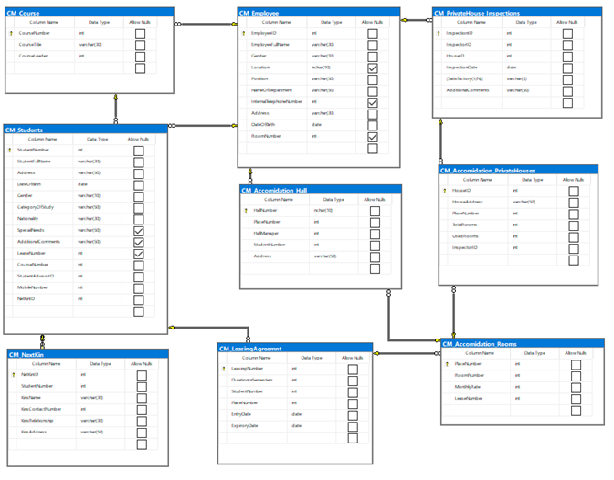
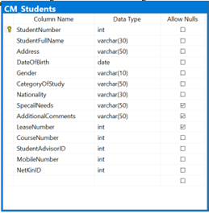
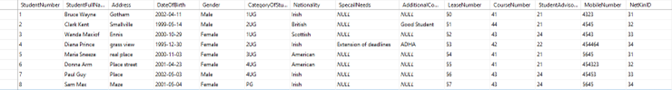

Project
College Accommodation Database
About
This was my final assignment for Database Administration. The brief for this database was from the college accommodation head and their request and needs for this database. However, this person had no background in IT and was only a customer so their request would require us to take the initiative to make it work. I created 9 tables to build the entire database and satisfy the request. The tables in the photo above show these tables which are CM_Students, CM_Employee, CM_Accomidation_Hall, CM_Accomidation_PrivateHouse, CM_Accomidation_Rooms, CM_NextKin, CM_PrivateHouseInspections and CM_PrivateHouseInspections. CM being my initials. For the data type to maintain consistency I made three categories for strings. Varchar (10) for low data input, Varchar(30) for medium data input and Varchar(50) for large data input. This database was created on Microsoft SQL server management studio. As we used the college’s servers, I can not remotely access the database to include a copy of the SQL code used to create it. In the example section below, I included a photo of the student table with its test data.
Example
Student table
Student table test data
